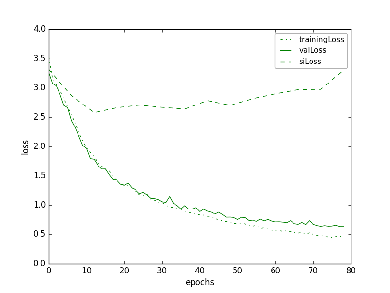
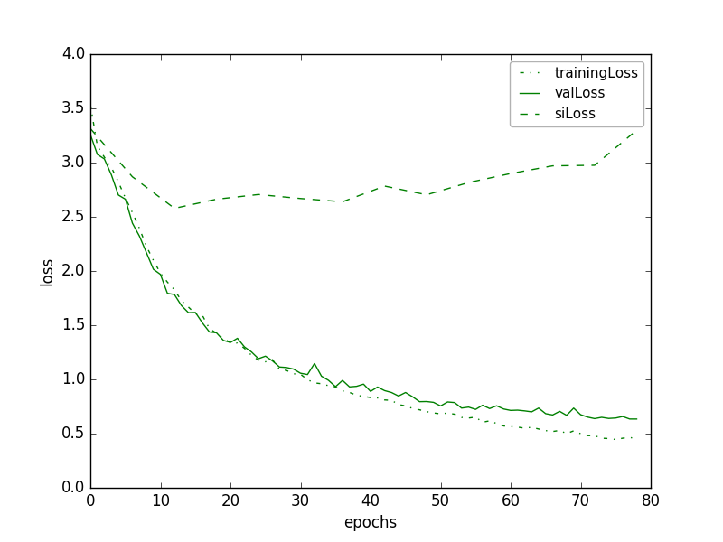
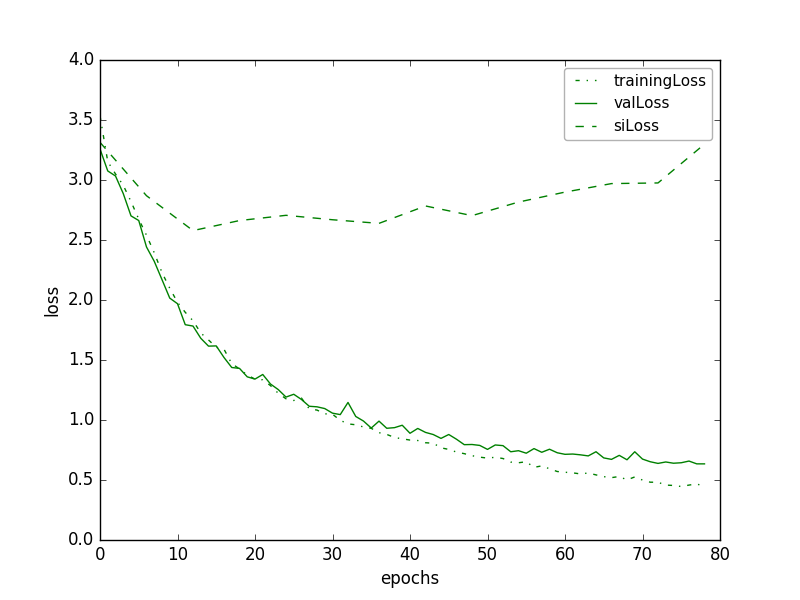
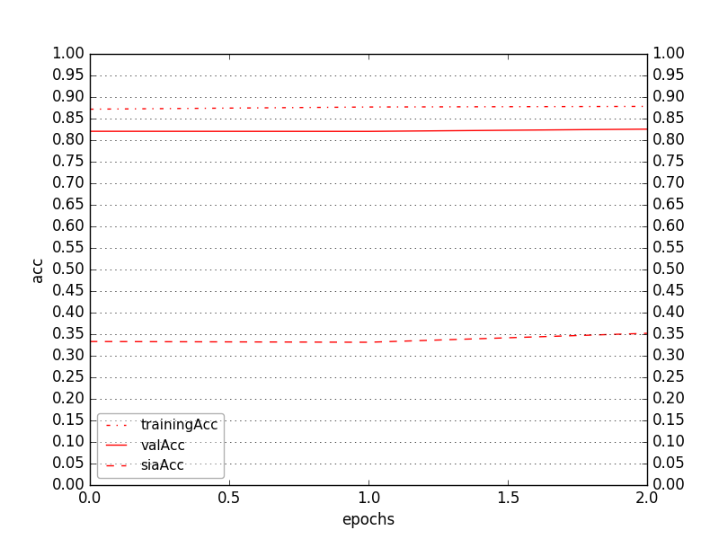
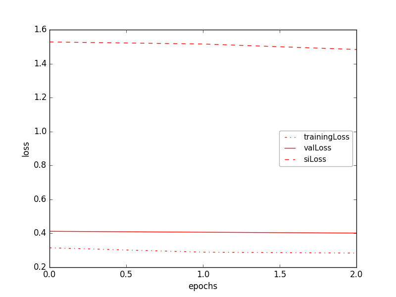

Using LipReader "LSTM-noPadResults-h256-depth2-LSTMactivtanh-enc64-encodedActivsigmoid-Adam-1e-03-GRIDcorpus-s0107-s0909-tMouth-vMouth-NOmeanSub-epoch078-tl0.4438-ta0.8596-vl0.6344-va0.8103-sil3.2989-sia0.3186.hdf5"

Figure 1. Training, validation, and speaker-independent (a) word-accuracies, (b) losses of lipReader while training
Using Critic "C3DCritic-LRnoPadResults-l1f8-l2f16-l3f32-fc1n64-vid64-enc64-oneHotWord52-out64-Adam-5e-04-GRIDcorpus-s0107-s0909-tMouth-vMouth-NOmeanSub-epoch002-tl0.2837-ta0.8783-vl0.4017-va0.8255-sil1.4835-sia0.3520.hdf5"

Figure 2. Training, validation, and speaker-independent (a) accuracies, (b) losses of critic while training